Quando tudo parece diferente,
nada parece confiável.
Identificação, documentação e resolução de um problema de inconsistência visual na Physis, plataforma usada por Petrobras, Comgás e EMAE, atualmente em processo de migração gradual de mais de 100 telas para o novo padrão visual. Identifiquei e resolvi um problema de inconsistência visual na Physis, usada por Petrobras, Comgás e EMAE.
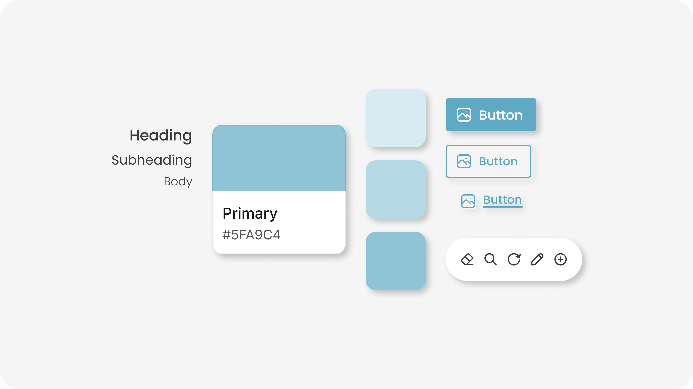
Mais de 10 desenvolvedores passaram a seguir os mesmos padrões, aumentando a consistência das entregas entre diferentes micro serviços. Mais de 10 devs passaram a seguir os mesmos padrões entre os micro serviços.
Novas funcionalidades passam a ser construídas sobre padrões já definidos, reduzindo decisões repetitivas entre design e desenvolvimento. Novas funcionalidades já nascem sobre padrões definidos, reduzindo decisões repetitivas.
As telas migradas conversam entre si, parecendo o mesmo produto. Os usuários encontram padrões familiares, reduzindo a necessidade de reaprender a interface em cada tela. Telas migradas parecem o mesmo produto, usuários não precisam reaprender a interface a cada tela.
O sistema desenvolvido cria as condições para reduzir o retrabalho e custos de manutenção à medida que a migração avança. O sistema reduz retrabalho e custo de manutenção à medida que a migração avança.
A Physis é uma plataforma de gestão de ativos industriais utilizada por clientes como Petrobras, Comgás e EMAE. Com mais de 20 micro serviços evoluindo ao longo dos anos, foi identificado que cada micro serviço havia desenvolvido sua própria interpretação da linguagem visual. Componentes equivalentes apresentavam diferenças de aparência e comportamento, tornando a experiência menos previsível para os usuários e a evolução do produto mais custosa para a empresa. A Physis tem mais de 20 micro serviços, cada um com sua própria interpretação visual.
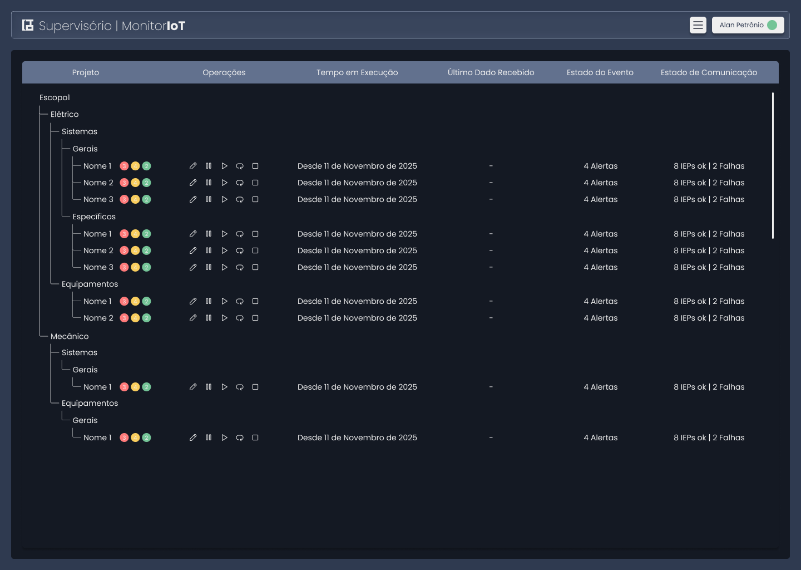
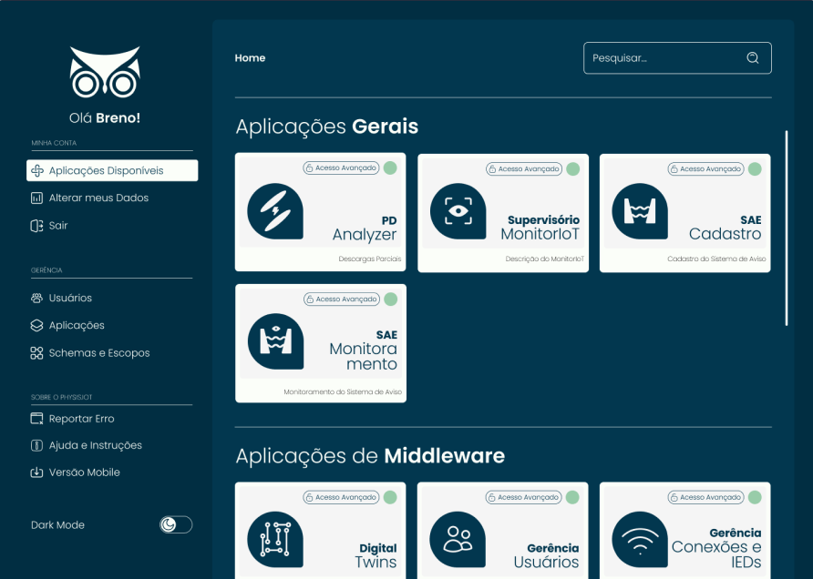
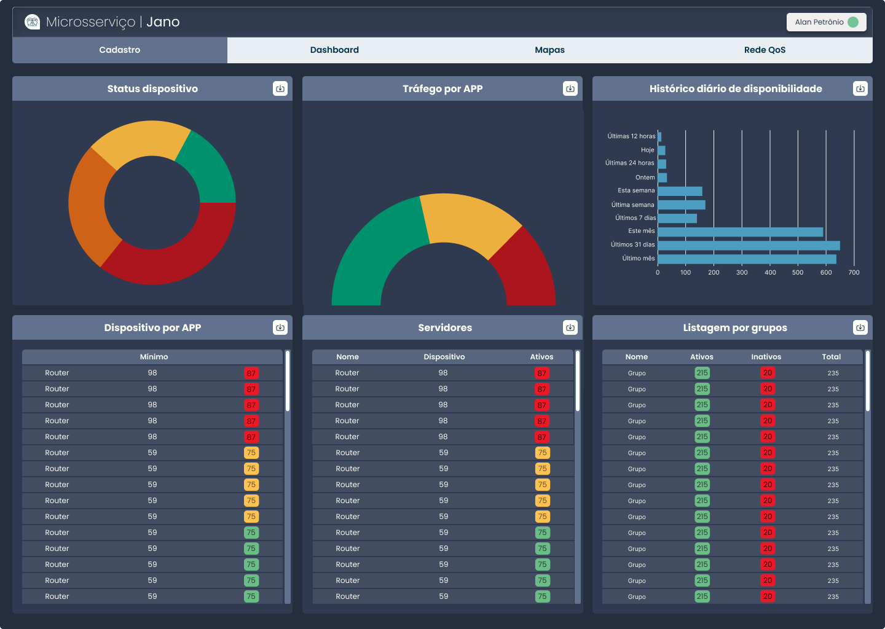
O produto cresceu sem um ecossistema visual
As inconsistências encontradas foram documentadas e foi proposto a criação de um Design System para unificar padrões, reduzir divergências e apoiar a evolução do produto em escala. A aprovação não foi imediata e exigiu alinhamento gradual com o time e a liderança. Documentei as inconsistências e propus um Design System pra unificar os padrões da plataforma.
Produto
Physis, gestão de ativos industriais
Clientes
Petrobras, Comgás, EMAE e outros
Escala
+10 stakeholders, +20 microserviços
Situação
Padrões visuais inconsistentes
Ninguém decidiu ter um produto inconsistente. As exceções foram se acumulando pouco a pouco, até que a plataforma perdeu uma linguagem comum, reduzindo a fluidez das interações e multiplicando o trabalho necessário para corrigir, testar e evoluir um mesmo componente. Ninguém decidiu ser inconsistente, as exceções se acumularam até a plataforma perder uma linguagem comum.
Sem escala de cores
Cada micro serviço seguia seu próprio padrão. Um simples ajuste de contraste gerava novas cores dependendo de quem implementava. No fim, variáveis como BlueNavy já nem eram mais azuis. Cada micro serviço seguia seu próprio padrão, nomes como BlueNavy nem eram mais azuis.
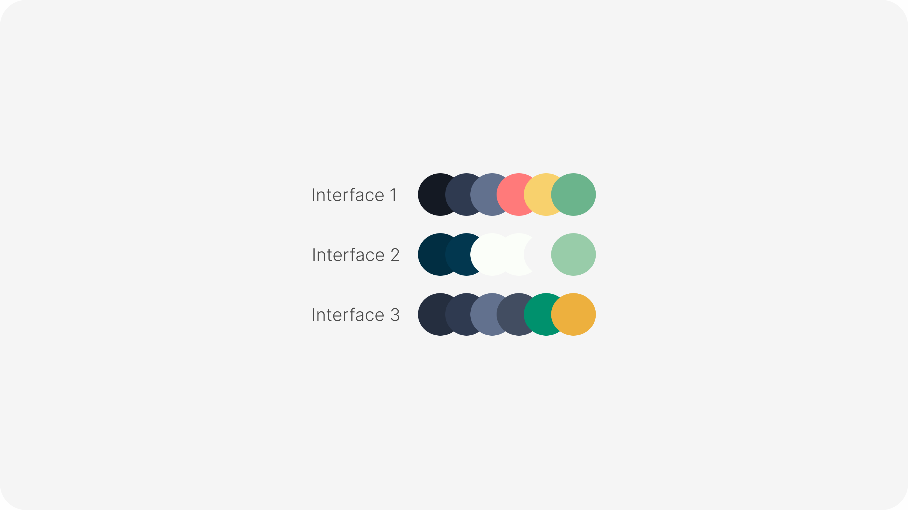
Ícones diferentes para o mesmo uso
Cada micro serviço seguia seu próprio padrão. Um simples ajuste de contraste gerava novas cores dependendo de quem implementava. No fim, variáveis como BlueNavy já nem eram mais azuis. Cada micro serviço seguia seu próprio padrão, nomes como BlueNavy nem eram mais azuis.
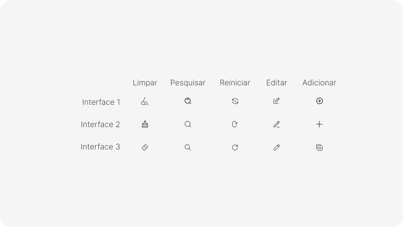
Tipografia sem critério
Sem padrões tipográficos compartilhados, cada tela comunicava prioridades diferentes. O que deveria chamava atenção em uma área parececia secundário em outra enfraquecendo a hierarquia visual e tornando a leitura menos eficiente. Sem padrões tipográficos, cada tela tinha prioridades visuais diferentes.
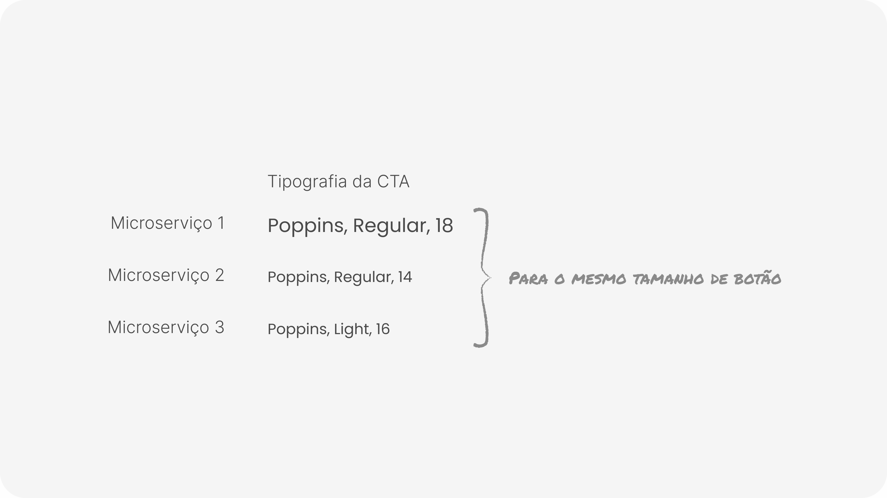
Espaçamentos e bordas livres
Sem um múltiplo base, cada componente possuía valores definidos individualmente, o que reduzia a reutilização e tornava a evolução da interface mais lenta. Sem um múltiplo base, cada componente tinha valores próprios, menos reutilização e evolução mais lenta.
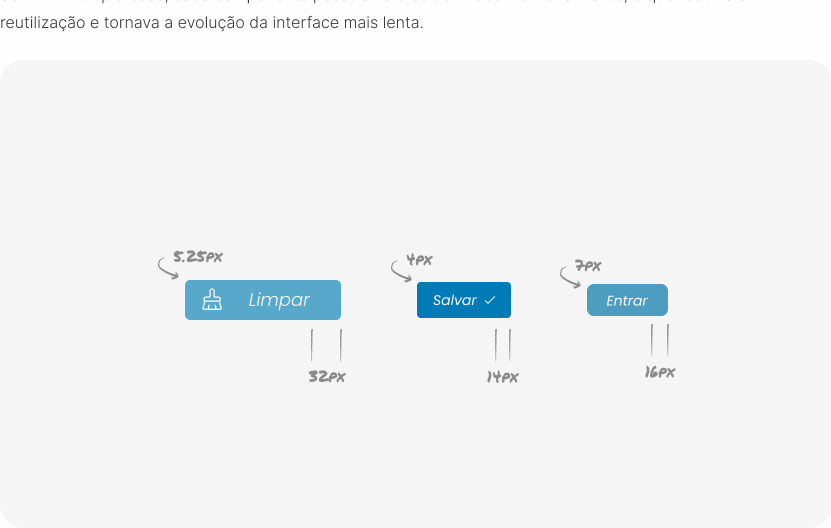
Campos de entrada sem padrão
O elemento mais recorrente da interface era o mais inconsistente. Tamanhos, bordas e estados variavam por tela, reduzindo a fluidez das interações e multiplicando o trabalho necessário para utiliza-los. O elemento mais usado era o mais inconsistente, tamanhos, bordas e estados variavam a cada tela.
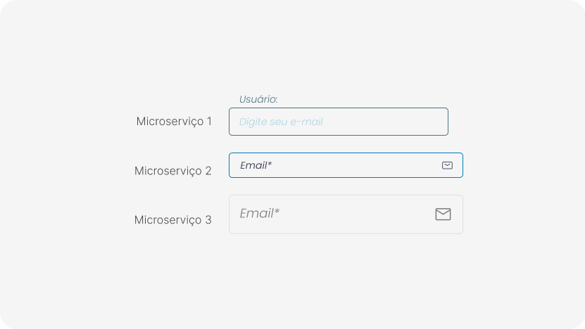
Antes de criar os componentes, definimos as regras que estruturariam o sistema. Analisamos as interfaces existentes para identificar padrões e transformamos essas decisões em tokens, facilitando a manutenção e evolução da plataforma. Assim, uma alteração em um token é refletida automaticamente em todos os componentes que o utilizam, sem ajustes manuais. Definimos as regras do sistema em tokens, mudar um token atualiza todos os componentes automaticamente.
Escala de cores
Criada uma escala tonal completa com nomes semânticos. Se a cor mudar, o nome continua fazendo sentido. Isso resolveu o problema de variáveis como BlueNavy que já tinham virado outra cor. Criei uma escala tonal com nomes semânticos, se a cor mudar, o nome continua fazendo sentido.
Neutral dark
Theme mapping
Além da escala, foi feito o theme mapping: cada token passou a corresponder a um contexto, claro ou escuro. Antes, a troca de tema era feita manualmente pelos devs. Com o mapping, isso passará a ser automático. Também criei o theme mapping: cada token corresponde a um contexto claro ou escuro, tornando a troca de tema automática.
Light
Dark
Ícones
Uma biblioteca única definida para toda a plataforma, usada via SVG. Acabando com a variação de estilo de ícones entre interfaces.
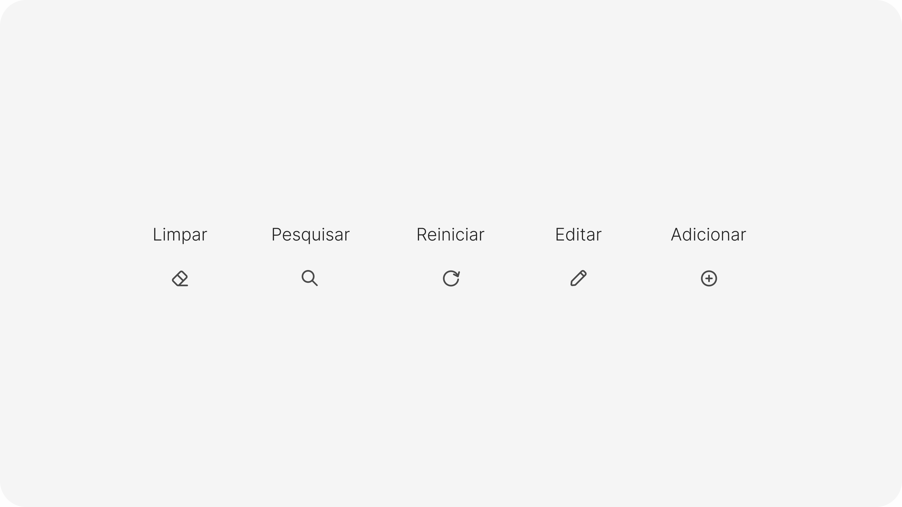
Tipografia
Variáveis de tipo com família, tamanho, peso, line-height, letter-spacing e paragraph-spacing fixos. Sentence case padronizado em todos os títulos, encerrando a variação entre telas. Variáveis de tipo fixas (família, tamanho, peso, espaçamento) e sentence case padronizado em todos os títulos.
Espaçamentos e raio de canto
Múltiplos de 4 como base em todo o sistema. Um critério simples que elimina valores soltos e sem relação entre si, e facilita o desenvolvimento. Múltiplos de 4 como base, um critério simples que elimina valores soltos e facilita o desenvolvimento.
| Token | Value | Usage |
|---|---|---|
| radius-0 | 0px | Não possui arredondamento |
| radius-1 | 4px | Arredondamento padrão |
| radius-2 | 8px | Arredondamento para seções maiores |
Botões
Três hierarquias definidas: primário, secundário e terciário. A cor azul foi mantida em todos os casos para que o usuário nunca se confunda sobre o que é clicável. Três hierarquias (primário, secundário, terciário) sempre na mesma cor, pra nunca confundir o que é clicável.
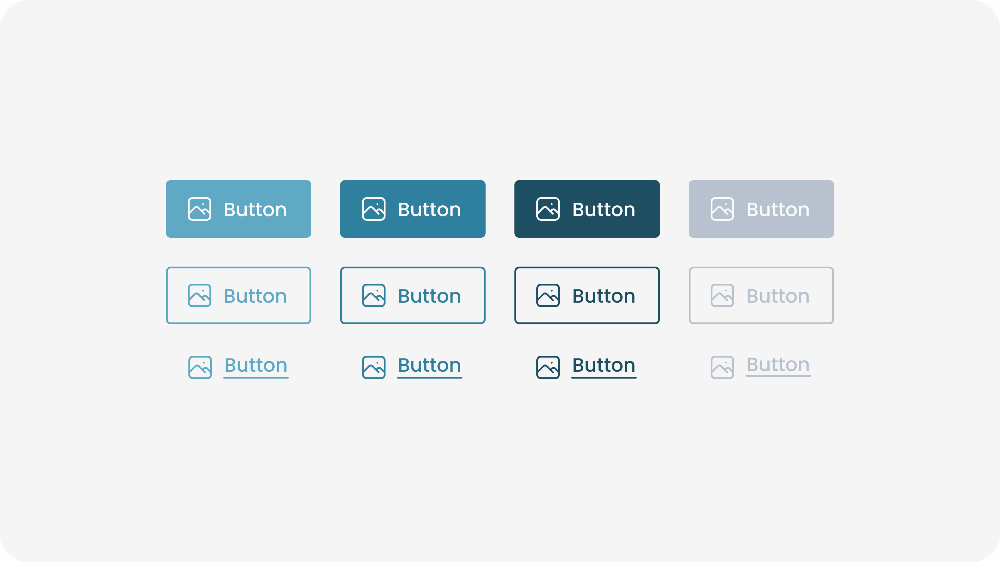
Campos de entrada
Os elementos foram padronizado, com variações, estados e comportamentos definidos.
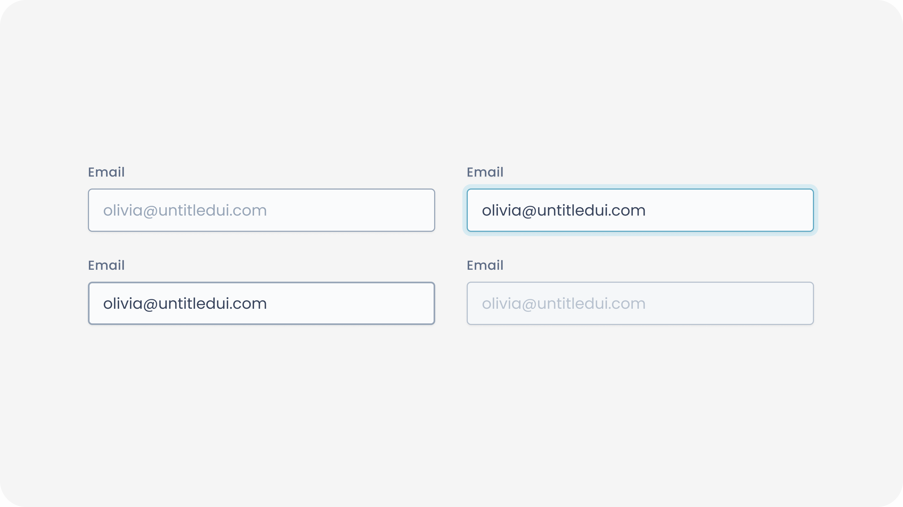
Documentação
Todas as escolhas e regras do design system foram documentadas para garantir consistência visual, reduzir o tempo de criação de novas telas e facilitar a comunicação de stakholders. Documentei todas as regras do sistema pra garantir consistência e agilizar a criação de novas telas.
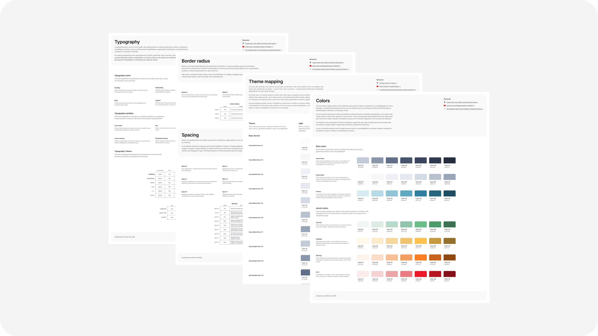
Com o sistema criado, o próximo passo era aplicá-lo. Telas novas já nasciam usando os componentes. As antigas precisavam ser reconstruídas. O desafio era que poucas das telas existentes tinha sido construída com componentes, não havia como trocar uma instância e atualizar facilmente. A ideia é que a migração ocorrá nos intervalos entre outras demandas, as telas vão sendo reconstruídas uma a uma. Telas novas já nascem com os componentes; as antigas são reconstruídas aos poucos.
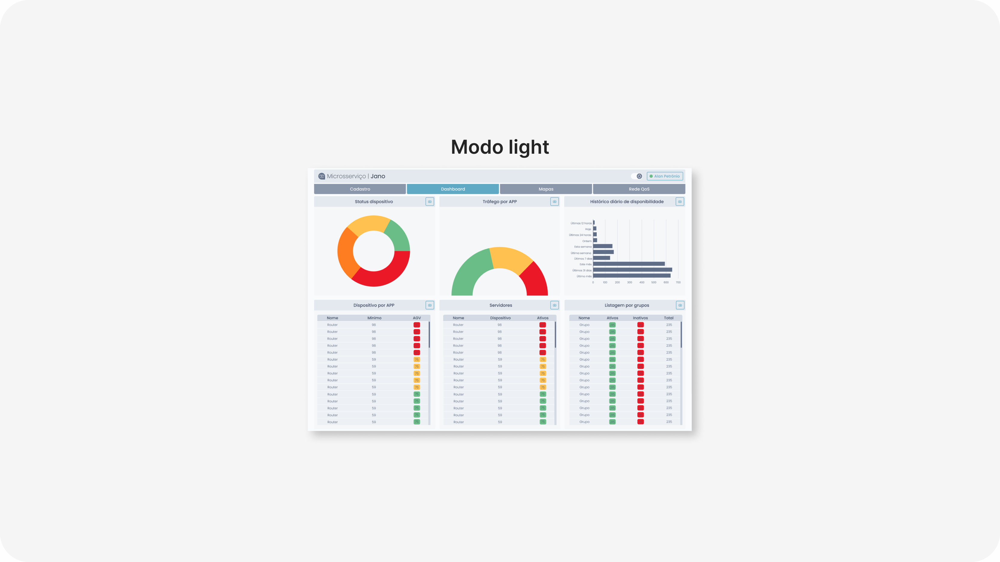
As telas que passaram pelo processo conversam entre si e parecem parte do mesmo produto, gerando mais confiança para o usuário, afinal, quando tudo parece diferente, nada parece confiável. As telas migradas conversam entre si e parecem parte do mesmo produto, gerando mais confiança pro usuário.
Interfaces não migradas

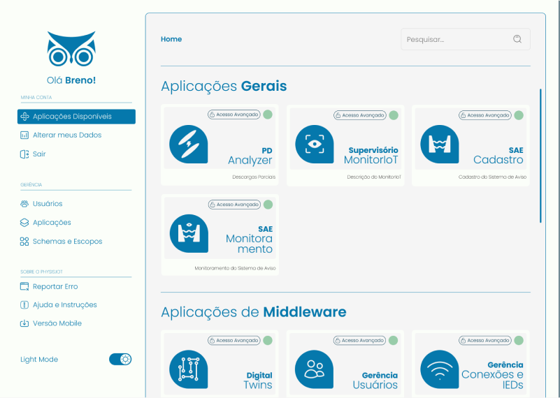
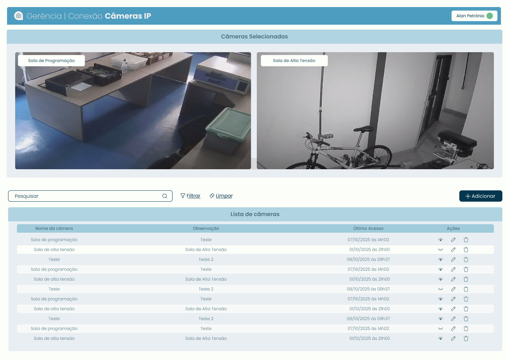

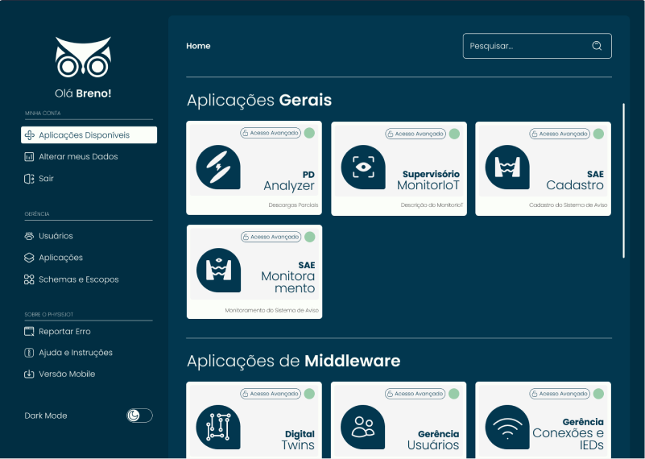
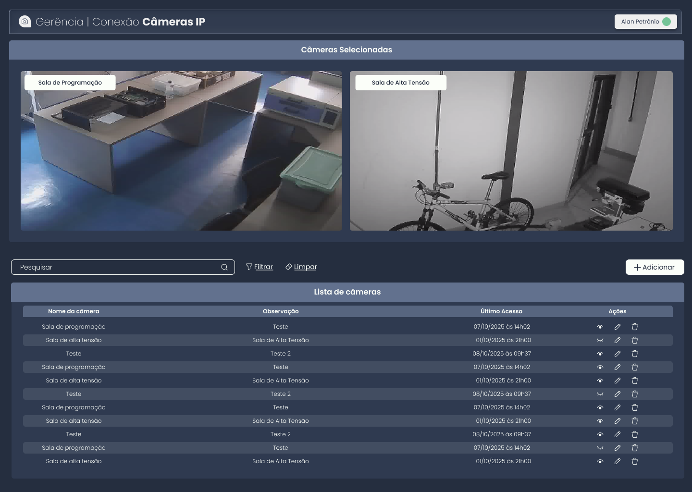
Interfaces migradas
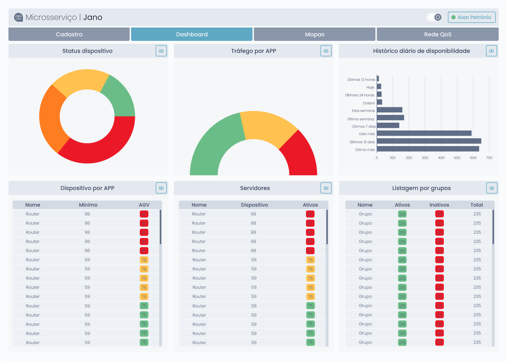
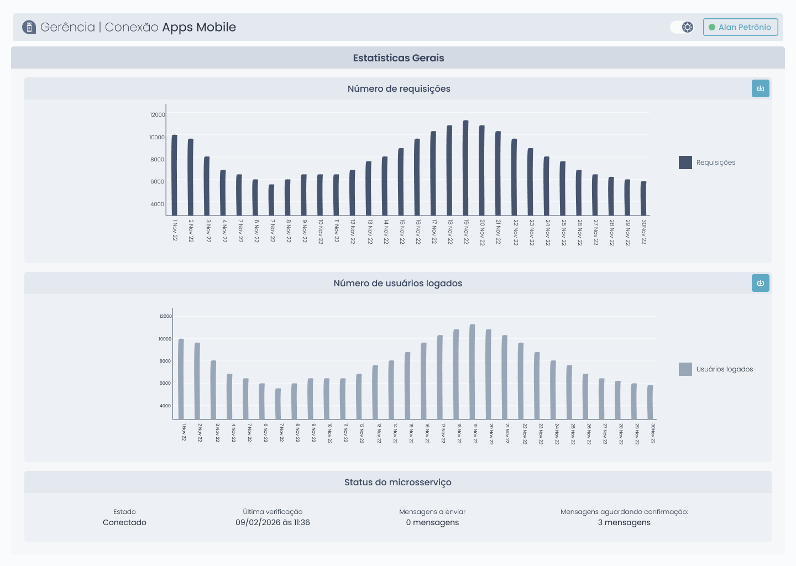
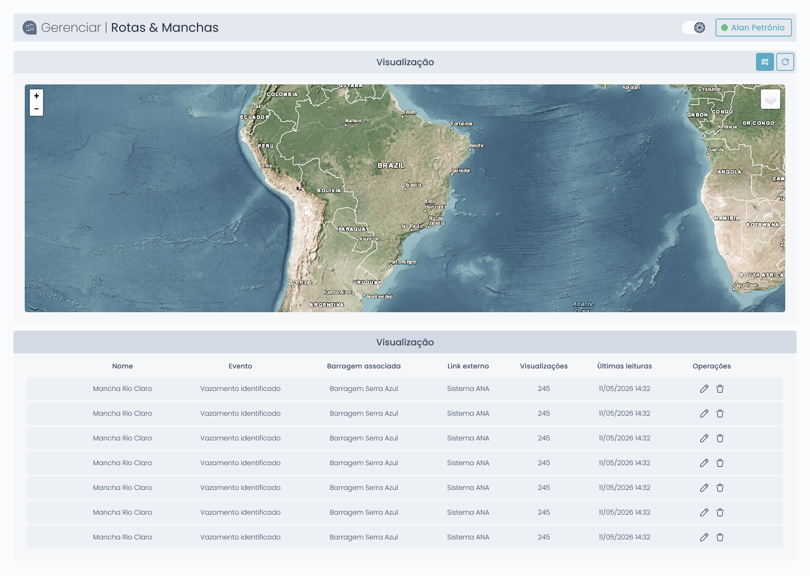
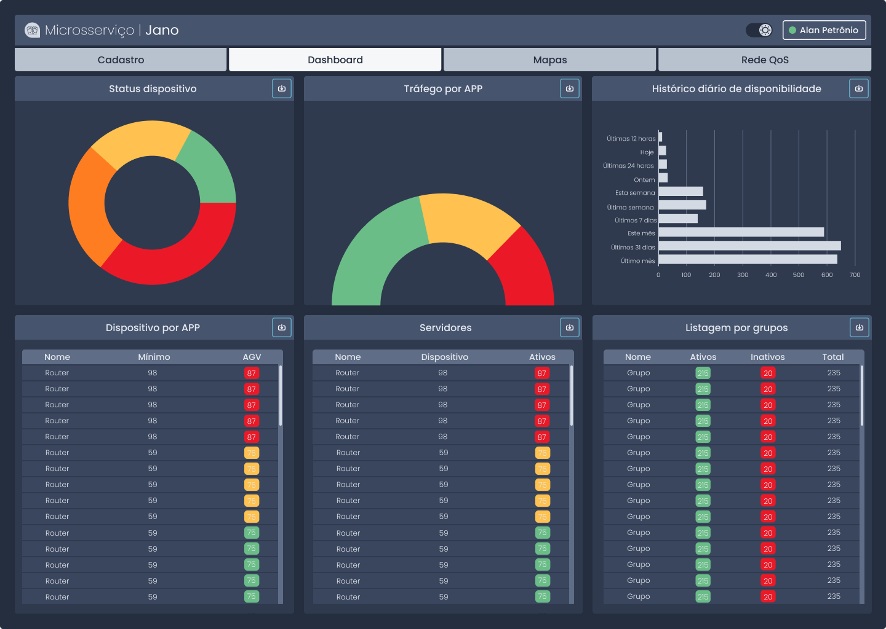
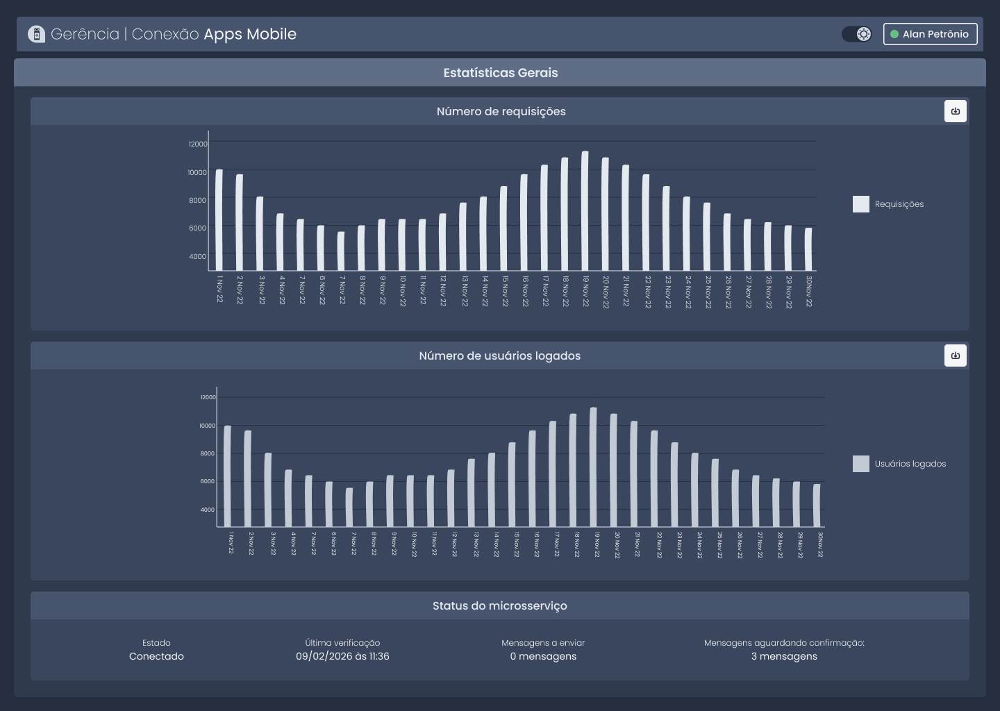
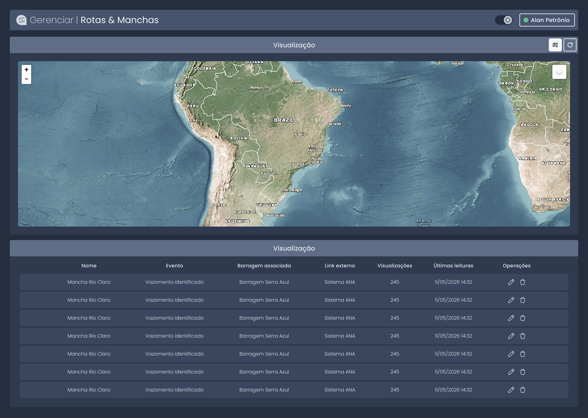
Entender antes de propor
As inconsistências eram apenas o sintoma. O problema real era a falta de recursos compartilhados entre os micro serviços. Atacar a causa importa mais do que corrigir o sintoma. As inconsistências eram só o sintoma, faltavam recursos compartilhados.
Sistema bom não se sustenta sozinho
Criar o Design System foi só o começo. Mantê-lo atualizado, migrar as telas antigas e garantir que ele continue fazendo sentido conforme o produto evolui é um trabalho contínuo. Criar o Design System foi só o começo, mantê-lo atualizado é trabalho contínuo.
Nomes importam mais do que parecem
Uma variável chamada BlueNavy que já tinha virado bege é um problema real de manutenção. Nomear por intenção, não por aparência, foi uma das decisões com mais impacto prático. BlueNavy virar bege é um problema real, nomear por intenção teve o maior impacto prático.
Nem toda decisão é sua
Houveram decisão vieram de instâncias superiores. Aprendi que defender uma escolha faz parte do trabalho, mas também faz parte saber operar dentro das restrições que você não controla. Nem toda decisão foi minha. Aprendi a defender escolhas e operar dentro de restrições.
Obrigada por ler até aqui :)